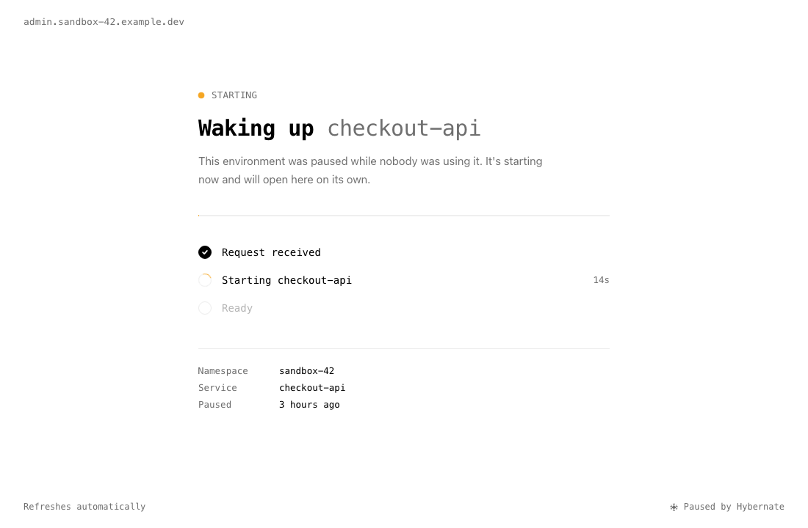

Wake on Request¶
A paused workload has no pods, so nothing answers its Service. With wake on request, the first request wakes it instead: the connection is held while the workload starts, then passed to one of its Ready pods. The caller usually sees one slow response, not an error; What the caller sees lists when it doesn't.
It's on by default for every workload Hybernate pauses on its own. There's nothing to configure.
How it works¶
Hybernate runs a small proxy, the doorman, as its own Deployment (two replicas, with a PodDisruptionBudget) next to the operator.
- When a workload pauses, the operator finds every Service that selects its pods and adds an extra EndpointSlice to each, one per IP family, pointing at the doorman's pods on a port of their own (20000-29999). The Service, its ClusterIP, and its DNS name don't change, so callers and Ingresses need no changes. IPv4, IPv6 and dual-stack Services are all supported.
- A connection to the Service reaches the doorman. If one of the Service's pods is already Ready, because the workload is waking or another workload's pods serve the Service, the connection goes straight to it. Otherwise, once the caller has sent something, the doorman holds the connection and sets
hybernate.io/last-requeston the ManagedWorkload, which wakes it the same way as an activity annotation. AWokenByRequestevent names the Service, and once the workload is Running, its clock showslastActivitySource: request. - The doorman watches the Service's own EndpointSlices. As soon as a pod is Ready, it connects to one of the Ready pods and passes the held connection through, including any bytes the caller already sent. Ready is what the pod's readiness probe says, so the app needs one that passes only once it can serve; see Readiness probes.
- Once the workload is
Running, the operator removes the doorman's EndpointSlices and traffic goes straight to the pods again. For 30 seconds after that, the doorman still passes connections that reach it to the Ready pods, without waking anything, while kube-proxy and load balancers catch up.
The doorman works on TCP connections, not HTTP requests, so it handles any TCP protocol: HTTP, gRPC, Postgres, Redis. Waking a workload also wakes its dependencies.
Ingress controllers, Gateway API implementations, and cloud load balancers that read EndpointSlices reach the doorman the same way. See Compatibility for which have been checked.
Readiness probes¶
The doorman passes a held request on as soon as one of the workload's pods is Ready, and Kubernetes decides Ready from the pod's readiness probe. A pod without one is Ready as soon as its containers start, which is often before the app inside can answer: while it loads its configuration or schema, connects to its database, or warms a cache. The request that woke it then gets whatever the app answers while it starts, such as a 503, instead of waiting for it. An app that isn't listening yet is fine: the doorman tries again every second until maxWait. Wake on request relies on a readiness probe that passes only once the app can serve:
spec:
template:
spec:
containers:
- name: api
readinessProbe:
httpGet:
path: /ready # answers 200 only once the app can serve requests
port: 8080
periodSeconds: 2
A short periodSeconds passes held requests on sooner once the app is ready. A startupProbe gates readiness too, and a tcpSocket probe on the app's port is enough for an app that only listens once it's ready. Hybernate reads the workload's pod template when it routes a paused workload: when none of its containers has a readiness or startup probe, and the pod has no readiness gates, the WakeOnRequest condition says so, and a NoReadinessProbe warning event points here, once each pause.
What wakes a workload, and what doesn't¶
| The caller | What happens |
|---|---|
| Sends bytes: an HTTP request, a TLS handshake, a database protocol's first message | Held, and the workload wakes |
| Connects and sends nothing for 3 seconds | Held, and the workload wakes: it's taken for a protocol where the server speaks first, such as MySQL |
| Connects and closes without sending anything, like a TCP health check | Closed; nothing wakes |
An HTTP GET or HEAD from a known probe, scraper or uptime monitor: one whose User-Agent starts with kube-probe/, Prometheus/, Blackbox Exporter/, vm_promscrape, GrafanaAgent/, Alloy/, OpenTelemetry Collector, otelcol, Datadog Agent/, Datadog/Synthetics, ELB-HealthChecker/, Amazon-Route53-Health-Check-Service, GoogleStackdriverMonitoring-UptimeChecks, Envoy/HC, Mozilla/5.0+(compatible; UptimeRobot/, Pingdom.com_bot, NewRelicPinger/, Uptime-Kuma/ or Gatus/ |
Answered 503 Service Unavailable with Connection: close while no pod is Ready; nothing wakes. Probes, scrapers and monitors would otherwise keep a workload awake forever. Once a pod is Ready they're passed through like any other request |
An HTTP GET or HEAD from Google Cloud's load balancer health check, User-Agent: GoogleHC/ |
Answered 200 OK while no pod is Ready; nothing wakes. Google's load balancers send nothing to a backend that fails its health check, so told the workload is down, they'd drop the request that should wake it. Once a pod is Ready it's passed through like any other request |
An HTTP GET or HEAD whose User-Agent starts with one you added with the Helm value doorman.healthCheckUserAgents, such as an in-house uptime monitor's. Any of these, built in or added, also matches when it follows (compatible;, as in Mozilla/5.0 (compatible; MyCorpMonitor/3.1) from a monitor that presents itself as a browser |
Answered 503 as above; nothing wakes |
Any other method from those agents, such as a Prometheus remote write or an Alertmanager notification POST |
Held, and the workload wakes: it's data for the workload, not a check on it |
An HTTP request for a hidden file: a path with a part that starts with a dot, such as /.env, /.git/config or /.aws/credentials, except under /.well-known/ |
Answered 404 Not Found; nothing wakes. Scanners probe every address on the internet for these, hunting for leaked secrets, and no app serves them to its users |
Your own health checkers and scrapers are recognised once you add their User-Agent prefixes, cluster-wide:
To keep the doorman off a port altogether, such as a metrics port something else scrapes, list it on the Service. Ports are named in the Service's ports, and the annotation takes either the name or the number:
kind: Service
metadata:
annotations:
hybernate.io/doorman-ignore-ports: "metrics" # or "9090", or both: "metrics,9090"
spec:
ports:
- name: http
port: 80
- name: metrics
port: 9090
Listed ports are never routed, so connections to them fail while the workload is paused, as they would without Hybernate.
Health checks the doorman can't recognise¶
The doorman can only tell a health check from a real caller by reading it. Two kinds reach a paused workload on its traffic port and wake it every time they run, so it never stays paused for longer than their interval:
- HTTPS and other TLS health checks. The request is encrypted, so the doorman can't see its
User-Agent. AWS target groups that use HTTPS check over HTTPS by default, as do Google Cloud backend services that use HTTPS or HTTP/2. - HTTP checks and scrapers whose
User-Agentisn't recognised, such as an uptime monitor you haven't added todoorman.healthCheckUserAgents.
hybernate.io/doorman-ignore-ports can't help when the checked port is the traffic port, since ignoring it would stop requests waking the workload too. Instead, either:
- Check over plain HTTP. The AWS and Google Cloud health checkers send a
User-Agentthe doorman recognises, so it answers them without waking anything: AWS's503, Google's200, as below. - Check a port of its own, one the workload serves only for health checks, and list it in
hybernate.io/doorman-ignore-ports. Not behind a GKE Ingress or Gateway: nothing answers an ignored port while the workload is paused, so Google's load balancer sees no healthy backend and sends nothing on; keep its check on the traffic port, over plain HTTP.
Either way, most load balancers see the workload as unhealthy while it's paused, as they would without Hybernate, and still send requests when every target is unhealthy: AWS's Application and Network Load Balancers fail open, so the first request reaches the doorman and wakes the workload. Google Cloud's Application Load Balancers, behind a GKE Ingress or Gateway, don't: until a backend passes its health check they answer 502 and send nothing on. So the doorman answers Google's health check, GoogleHC/, with 200 OK while the workload is paused, without waking it, and holds the request that follows. Check any other load balancer before relying on wake on request behind it.
Environments on the public internet¶
Wake on request wakes a paused workload for any request it can't recognise as a health check, and on the public internet most requests are robots: search engine crawlers, and scanners that try every address for known weaknesses. Many of them present an ordinary browser's User-Agent on purpose, so no list of agents can keep up with them. A paused workload anyone on the internet can reach is woken by them every few minutes, and frees little.
The doorman turns away the scanners hunting for leaked secrets in hidden files, as above, but not the rest. Put non-production environments behind a VPN, single sign-on at the ingress, or an allowlist of your offices' and VPN's addresses. That keeps the robots away from them, which pausing needs, and keeps unfinished work away from the internet, which a staging or preview environment needs anyway.
Services shared with other workloads¶
A Service is routed to the doorman only while none of its pods is Ready. When several workloads sit behind one Service, such as a canary and a stable Deployment, traffic goes to whichever has Ready pods, and a paused one behind it reports WakeOnRequest=False with reason ServedByOtherPods. Once every workload behind the Service is paused, the Service is routed and a request wakes them.
The operator reads the Service's own EndpointSlices from the API server when it decides, since it doesn't cache other workloads' endpoints, and decides again every 30 seconds while another workload's pods serve the Service. So a Service whose other pods all go is routed within 30 seconds; until then, requests to it fail as they would without Hybernate.
Browsers¶
A browser opening a paused workload doesn't sit on a blank tab. The doorman answers straight away with a page that says the environment is starting, and reloads itself every 3 seconds. It shows the address the person opened, so it reads as part of their environment, and, once the workload is Resuming, how long it has been starting. It names no namespace, workload or Service. As soon as any of the workload's pods is Ready, the next reload is passed through to the app.

The page is only for a browser loading a page: a GET or HEAD with Sec-Fetch-Mode: navigate, which browsers send when you open a URL, or, from older browsers, one that asks for HTML. Scripts' requests, API clients, form posts, WebSockets, TLS, and other protocols are held as usual. The doorman tells them apart from the first bytes the caller sends, then passes those bytes on unchanged when it holds the connection. It reads up to 16 KiB of a request's headers; longer ones, as large single sign-on cookies can make them, are judged by the headers in those first 16 KiB, which browsers send before their cookies.
The page is sent as 503 Service Unavailable with Cache-Control: no-store, Retry-After: 3 and X-Robots-Tag: noindex, so caches, crawlers, and monitors don't mistake it for the app. Because it answers at once, a proxy's timeout doesn't matter for browsers, however long the workload takes to start.
A browser only reaches the doorman if it asks the server. Pages an app serves without a Cache-Control header, as static file servers often do, can be shown from the browser's cache instead, so a reload of a page opened a moment ago may show the cached copy rather than the waking-up page. Apps that send Cache-Control: no-cache for their HTML, as most do so that new releases take effect, always reach the doorman.
To hold browsers too, set:
For a workload opted in with the label, set the annotation hybernate.io/wake-page: "false" on it instead.
How long a connection is held¶
The doorman holds each connection for up to wake.maxWait, 2 minutes by default and at most 1 hour, which is the most the ManagedWorkload accepts. If no pod is Ready by then, it closes the connection. The wake carries on, so a retry a little later succeeds.
For a workload opted in with the label, set the annotation hybernate.io/wake-max-wait: "5m" on it instead.
Callers have their own timeouts. Most HTTP clients wait at least 30 seconds, and browsers wait minutes. A proxy in front of the Service can give up sooner: ingress-nginx closes an upstream request after 60 seconds by default. For a workload that takes longer than that to start, raise the Ingress timeout to match maxWait:
Limits¶
So that a flood of connections can't exhaust the doorman, or wake workloads faster than the cluster can start them:
- Each doorman pod holds at most 2048 connections: at most 256 for one workload, at most 1024 from one source IP, and at most 128 from one source IP for one workload. A connection over these caps is closed at once, with nothing sent.
- Each doorman pod passes through at most 1024 connections at once, at most 512 from one source IP. A connection over these caps is held, as if the workload weren't Ready yet, until a place frees or
maxWaitruns out. A passed-through connection that carries nothing either way for 10 minutes is closed, so a caller that vanished without closing doesn't keep its place; one whose client or server pings, as WebSockets and database pools do, stays open. Once the workload is awake and its route starts draining, connections still passing through the doorman are closed after 5 minutes, so long-lived callers reconnect to the pods directly. - Wakes are rate-limited per source IP (a burst of 30, then one every 2 seconds) and overall (a burst of 200, then 10 a second). Only a request that would actually wake a paused workload counts, and one refused overall doesn't use up its source's allowance. A caller whose wake is over the limit isn't turned away: a browser gets the waking-up page, anything else is held, and the wake is retried every 2 seconds until the allowance lets it through or
maxWaitruns out. - While a connection is held, the doorman reads what the caller sends, so that a caller who gives up is let go at once: up to 1MiB per connection, and 32MiB across all of them. The first 8KiB of each doesn't count towards the 32MiB, so a caller who sent an ordinary request and left is let go at once even while large uploads have used it up. A larger request body waits in the network until the workload is up, or until other held connections free some of the 32MiB, and a caller who leaves partway through one is let go only then. A caller that closes its connection has left, whatever its protocol, and is never passed to the workload: over TCP, closing and shutting down only the sending side look the same, and nearly every caller that does either has given up. So a client that sends its request and then shuts down its side to wait for the answer, as
nc -Ndoes, is dropped while the workload is asleep; leave the connection open instead.
The source IP is the address the doorman sees, which for traffic through an ingress controller is the controller's pod. That's why the caps are per workload as well as per source: every user behind one ingress pod shares its address, and a burst to one environment mustn't crowd out the others. The cap on one workload, whatever the source, keeps one that never becomes Ready from taking every place.
When a doorman pod shuts down, it reports itself not Ready at once, so the operator moves paused workloads' EndpointSlices to the other doorman pods: it rewrites only their endpoints, many at once, so a thousand paused Services move in about ten seconds. A rollout of the doorman starts each new pod, and waits 5 seconds after it's Ready, before stopping an old one. Only the operator can move them, and when it's being upgraded or restarted at the same time it takes a few seconds to take over, so the stopping pod goes on holding and passing through new connections for 15 seconds. Then it stops accepting them, and gives those it holds or passes through the rest of 25 seconds to finish. The chart gives the pod 40 seconds in all, after a 5-second sleep that lets kube-proxy and load balancers stop sending it new connections.
When a workload stops being routed, the doorman goes on serving its port for 30 seconds, so a browser's last refresh of the waking-up page doesn't land on a closed port, and the operator gives that port to no other workload for a minute. The operator records the minute in the ManagedWorkload's status, so a newly elected leader honours it too, and a deleted ManagedWorkload stays until it's over, up to a minute after its routing is removed.
Turning it off¶
Requests to the paused workload then fail, as they would without Hybernate, and it reports WakeOnRequest=False with reason TurnedOff. With the label, set hybernate.io/wake-on-request: "false". To turn it off for the whole cluster, set the Helm value doorman.enabled: false, or run the operator with --doorman-service=""; workloads then report WakeOnRequest=False with reason DoormanDisabled.
When a workload isn't routed¶
| Situation | What happens |
|---|---|
No Service selects the workload, or none has a TCP port that isn't in hybernate.io/doorman-ignore-ports |
WakeOnRequest=False, reason NoServices. A workload no request reaches, such as a queue worker, wakes on a Prometheus activity query that sees its demand instead, such as its queue's length, and its forecast learns the hours it's paused from it |
A headless Service (clusterIP: None) |
Not routed. Callers resolve pod IPs from DNS and never reach the doorman; wake the workload with an activity annotation instead |
A Service without a selector, or an ExternalName Service |
Not routed, since its endpoints aren't the workload's pods |
| UDP or SCTP ports | Not routed; only TCP ports are |
| A Service another workload's Ready pods serve | Not routed; reason ServedByOtherPods if no Service is. See Services shared with other workloads |
A Service with internalTrafficPolicy: Local |
Not routed: kube-proxy sends each caller only to endpoints on its own node, and the doorman's pods are on one or two nodes, so most callers would reach nothing. Reason NodeLocalTraffic if no Service is routed; otherwise the condition's message names it. Wake the workload with an activity annotation, or give it a Service with the default policy (Cluster) |
| A Service in an IP family no doorman pod has an address in | Not routed; reason UnsupportedIPFamily if no Service is |
A Service behind GKE container-native load balancing: one a GKE Ingress uses, one with standalone NEGs, or one cloud.google.com/neg-status lists NEGs for |
Not routed, with a warning event, unless the optional forwarder is on. Reason UnsupportedLoadBalancer if no Service is routed; otherwise the condition stays True and its message names the Services left out. GKE's own cloud.google.com/neg: '{"ingress": true}' on every Service doesn't count by itself; see On GKE |
| A Service behind GKE container-native load balancing, with the forwarder on, before a forwarder pod is Ready | Not routed until one is, usually a few seconds after the pause. Reason ForwarderNotReady if no Service is routed, saying why, such as an image that can't be pulled or a quota that refuses the forwarder's pods; otherwise the condition's message names the Service. See GKE container-native load balancing |
| The Deployment or StatefulSet is deleted | Routing is removed, since nothing would start the pods a held request waits for. TargetAvailable=False, reason TargetNotFound; requests fail as they would without Hybernate |
| No doorman pod is Ready | WakeOnRequest=False, reason DoormanUnavailable, and routing is removed. Requests fail until a doorman pod is back |
| All doorman ports are in use | WakeOnRequest=False, reason NoFreePort. The doorman has 10,000 ports, one per paused Service port in the cluster |
| The workload would hold more than 32 doorman ports, or its namespace more than 256 | WakeOnRequest=False, reason TooManyPorts, so one tenant can't use up the ports every namespace shares. Set the caps with the Helm values doorman.portsPerWorkload and doorman.portsPerNamespace |
Routing failed, such as an EndpointSlice write being refused, or an EndpointSlice that isn't the doorman's already having the name the doorman's would take (<service>-o<hash>), which it never overwrites |
WakeOnRequest=False, reason RoutingFailed, with a warning event. It's retried with backoff, from 5 seconds up to 5 minutes. Routing problems never hold up a pause or a wake |
Once the workload is awake, WakeOnRequest goes to False, reason NotPaused, unless the last pause found a problem with its Services: ServedByOtherPods, NodeLocalTraffic, UnsupportedIPFamily, UnsupportedLoadBalancer or TooManyPorts. That stays, its message starting at its last pause:, since the next pause meets it again unless it's fixed, and kubectl hybernate status lists it under Needs attention while the workload runs. Every pause works routing out afresh.
On GKE¶
GKE adds cloud.google.com/neg: '{"ingress": true}' to every new Service of a VPC-native cluster, which is the default. It asks GKE to use container-native load balancing, network endpoint groups (NEGs) of the Service's pods, only should a GKE Ingress use the Service, so Hybernate routes a Service with it like any other: callers in the cluster, and ingress controllers that read EndpointSlices, such as ingress-nginx, wake the workload.
A Service that really is in NEGs isn't routed, unless the optional forwarder is on, with reason UnsupportedLoadBalancer: GKE's NEG controller refuses endpoints whose pods are in another namespace, as the doorman's are, and can stop syncing the load balancer altogether. That's a Service:
- that a GKE Ingress uses, one with
kubernetes.io/ingress.classgce,gce-internal,gce-regional-externalorgce-multi-cluster, or with no class at all, while the Service has{"ingress": true}. GKE reads only the annotation: an Ingress that setsingressClassNameisn't GKE's - with standalone NEGs,
exposed_portsin itscloud.google.com/neg, as GKE Gateway sets on the Services its routes use - that GKE's NEG controller lists NEGs of pods for in
cloud.google.com/neg-status
Hybernate looks again whenever an Ingress or a Service in the namespace changes, so a Service is taken off the doorman as soon as a GKE Ingress starts using it, and routed again once none does. To see what GKE has set on a Service:
Requests through a GKE Ingress on instance groups, whose Service has cloud.google.com/neg: '{"ingress": false}', reach the doorman through the Service's node port and wake a paused workload, since the doorman tells Google's health check it's up. Without the forwarder, requests through a GKE Ingress whose Service is in NEGs, or through a GKE Gateway, which always uses NEGs, don't: the Service isn't routed, and the load balancer answers 502 while the workload is paused. Wake it another way, such as kubectl hybernate wake, an activity annotation from your developer portal, or the forecast's autoResume. Or reach it through an ingress controller that reads EndpointSlices, such as ingress-nginx, in place of the GKE Ingress or behind it: the GKE Ingress then uses the ingress controller's Service, which never pauses, and the controller sends requests on to the workload's Service, which is routed.
With the forwarder on, callers in the cluster wake the workload through the Ingress's own Service too. Without it, for callers in the cluster to wake a workload whose Service a GKE Ingress uses, give them a Service of their own, which no GKE Ingress uses, so it's routed:
apiVersion: v1
kind: Service
metadata:
name: api-internal
namespace: preview-42
spec:
selector:
app: api
ports:
- name: http
port: 80
targetPort: 8080
Turning NEGs off on the Ingress's own Service, with cloud.google.com/neg: '{"ingress": false}', gets it routed too, so requests through the Ingress wake the workload, but moves a gce Ingress onto instance groups, which needs the Service to be type: NodePort, and a gce-internal Ingress can't do without NEGs. GKE warns against changing the annotation on a Service a load balancer uses, since the change replaces the load balancer's backends.
GKE container-native load balancing (NEGs)¶
GKE's NEG controller only accepts endpoints whose pods are in the Service's own namespace, so a Service in NEGs can't be pointed at the doorman's pods, and by default isn't routed (see On GKE). So a request through a GKE Ingress whose Service is in NEGs, or through a GKE Gateway, wakes a paused workload only with the forwarder on, an optional mode, off by default, for teams whose paused environments are reached that way. GKE uses NEGs for an Ingress's Services by default on VPC-native clusters, and always for a Gateway's. Requests to Services no GKE Ingress or Gateway uses, from inside the cluster or through other ingress controllers and load balancers, wake workloads without it.
What it runs¶
While a workload with a Service behind NEGs is paused, the operator runs a Deployment beside it, hybernate-forwarder-<workload>, in the workload's namespace, and points that Service at the forwarder's pods instead of the doorman's. GKE's NEG controller accepts them, since they're in the Service's namespace. The forwarder passes every connection to the doorman, bytes untouched, and the doorman holds it and wakes the workload as it does any other. Once the workload is Running and its route has drained, a minute later, the operator deletes the forwarder. The ManagedWorkload owns it, so deleting the ManagedWorkload deletes it too. The workload's other Services, those no NEG uses, are routed to the doorman directly, as usual.
- Size and cost: two pods by default (
doorman.negForwarder.replicas), spread across nodes, so a node drain doesn't leave the workload unreachable while GKE registers a new pod. Each requests 10m of CPU and 32Mi of memory, limited to 64Mi (doorman.negForwarder.resources), and runs only while the workload is paused. - Access: it runs the operator's image as the namespace's
defaultServiceAccount, without its token, and needs no access to the API server. Its pods meet the Pod Security Standards' restricted level, and keep Istio's and Linkerd's sidecars out. It carrieshybernate.io/ignore, so a namespace opted in with its label doesn't have Hybernate manage it. - Ports: it listens on the ports the workload's own pods serve, the Services' target ports, since those are the ports GKE's firewall rules let Google's load balancers reach. For a port below 1024 it sets the
net.ipv4.ip_unprivileged_port_startsysctl, which the restricted level allows, rather than run as root. - Readiness: a forwarder pod is Ready only while it reaches the doorman on every port it passes connections to. It finds the doorman's pods through a headless Service the chart adds,
hybernate-doorman-podsfor a release namedhybernate. Until a forwarder pod is Ready, the Service isn't routed, and the workload reportsWakeOnRequest=False, reasonForwarderNotReady, with why.
To see it:
kubectl get deployments -n preview-42 -l app.kubernetes.io/name=hybernate-forwarder
kubectl get endpointslices -n preview-42 -l hybernate.io/forwarded=true
The route of a Service sent through the forwarder shows forwarded: true in the ManagedWorkload's status.doorman.
Health checks behind NEGs¶
The endpoint Google's load balancer checks is now the forwarder, which passes the check to the doorman, and the doorman answers Google's health check (User-Agent: GoogleHC/) with 200 OK, as on every route, without waking anything; every other checker still gets 503. As anywhere, an HTTPS or HTTP/2 health check can't be read, and wakes the workload every time it runs: keep the backend service's health check on the traffic port, over plain HTTP, as a GKE Ingress sets up for an HTTP backend. A port of its own doesn't work here: the forwarder listens only on the ports it routes, so a check on another fails, and Google's load balancer then sends nothing on (see Health checks the doorman can't recognise).
Timeouts behind NEGs¶
Google's load balancer waits 30 seconds for a backend's answer by default. A browser gets the waking-up page at once, but anything else waits for the workload, so for a workload that takes longer to start, raise the backend service's timeout to match wake.maxWait. For a GKE Ingress, with a BackendConfig, which the Service names in its cloud.google.com/backend-config annotation, '{"default": "slow-start"}':
apiVersion: cloud.google.com/v1
kind: BackendConfig
metadata:
name: slow-start
namespace: preview-42
spec:
timeoutSec: 120
For a GKE Gateway, set spec.default.timeoutSec in a GCPBackendPolicy.
Network policies behind NEGs¶
The chart's doorman NetworkPolicy (networkPolicy.enabled) admits forwarders besides doorman.networkPolicy.ingressFrom, by their labels, app.kubernetes.io/name: hybernate-forwarder and hybernate.io/operator naming Hybernate's namespace, from any namespace. Anyone who can create pods can give them those labels, and so reach the doorman's routing ports, as any caller in ingressFrom can.
In the workload's namespace, a default-deny policy must let the forwarder's pods be reached by whatever reaches the workload, Google's load balancers and health checks from 130.211.0.0/22 and 35.191.0.0/16 among them, and let them reach the doorman and DNS:
apiVersion: networking.k8s.io/v1
kind: NetworkPolicy
metadata:
name: allow-hybernate-forwarder
namespace: preview-42
spec:
podSelector:
matchLabels: {app.kubernetes.io/name: hybernate-forwarder}
policyTypes: [Ingress, Egress]
ingress:
- from:
- ipBlock: {cidr: 130.211.0.0/22}
- ipBlock: {cidr: 35.191.0.0/16}
egress:
- to:
- namespaceSelector:
matchLabels: {kubernetes.io/metadata.name: hybernate-system}
podSelector:
matchLabels: {control-plane: doorman}
ports:
- {port: 20000, endPort: 29999, protocol: TCP}
- ports:
- {port: 53, protocol: UDP}
- {port: 53, protocol: TCP}
Add your in-cluster callers to ingress.from if apps in the cluster call the Service too.
Limits behind NEGs¶
- Right after a pause: GKE takes a while, typically under a minute, to register the forwarder's pods in the NEG and see them pass health checks. Until it has, requests through the load balancer can get a
502, as after any scale-down, and the Service can show aSyncNetworkEndpointGroupFailedwarning event from GKE,endpoint count from endpointPodMap cannot be zero, for the moment between the workload's pods going and the forwarder's arriving; GKE retries it within seconds. After a wake, the Service goes back to the workload's own pods as soon as one is Ready; the forwarder goes on passing what still reaches it to the doorman, which passes it to the workload for the 30 seconds its route drains, and is deleted a minute after the wake. - The caller's address: the doorman sees the forwarder's, not the caller's, so dependencies aren't learned from requests that come through it, and the doorman's per-source limits count each forwarder pod as one source. Through a load balancer, the caller is one of Google's proxies anyway.
- Images from a private registry: the forwarder pulls the operator's image in the workload's namespace, as its
defaultServiceAccount, so a mirror that needs a pull secret needs it there too. GKE nodes pull from Artifact Registry in their own project without one. - Turning it off leaves running forwarders in place, since the operator no longer may delete them:
kubectl delete deployments -A -l app.kubernetes.io/name=hybernate-forwarder. - With the Kustomize manifests, set it up by hand: run the operator with
--neg-forwarder,--neg-forwarder-imagenaming its own image, and--neg-forwarder-doorman-service, grant itcreateanddeleteon Deployments, and add a headless Service selecting the doorman's pods. See Configuration.
Network policies¶
The doorman connects to woken pods directly, from the Hybernate namespace. If a workload's namespace has a default-deny NetworkPolicy, allow ingress from the doorman:
apiVersion: networking.k8s.io/v1
kind: NetworkPolicy
metadata:
name: allow-hybernate-doorman
namespace: preview-42
spec:
podSelector: {}
policyTypes: [Ingress]
ingress:
- from:
- namespaceSelector:
matchLabels: {kubernetes.io/metadata.name: hybernate-system}
podSelector:
matchLabels: {control-plane: doorman}
Callers reach the doorman on ports 20000-29999, so a default-deny policy on the Hybernate namespace needs to allow those too.
Restricting who can reach the doorman¶
The doorman is a way in to every paused workload
Any client that can reach a doorman pod can reach every routed, paused workload, in any namespace, on its Service ports. The workload's own NetworkPolicy sees the doorman as the source, not the client, so a policy that admits the doorman admits everyone who can reach it. The rate limits slow a port scan through the doorman; they don't stop one.
The chart's NetworkPolicy (networkPolicy.enabled, off by default) leaves the routing ports open to every source unless you say who may use them. List the callers your paused workloads really have, such as your ingress controller's namespace and the namespaces whose apps call paused services, in doorman.networkPolicy.ingressFrom:
networkPolicy:
enabled: true
doorman:
networkPolicy:
ingressFrom:
- namespaceSelector:
matchLabels: {kubernetes.io/metadata.name: ingress-nginx}
- namespaceSelector:
matchLabels: {team: checkout}
Each entry is a NetworkPolicy peer, so podSelector and ipBlock work too. Everyone else is refused before reaching the doorman. The chart's policy also keeps the doorman's metrics port open to namespaces labelled metrics: enabled. Setting ingressFrom without networkPolicy.enabled is refused at install, since it would create no policy and leave the doorman open. Don't add a policy of your own beside the chart's: NetworkPolicies add up, so the chart's open routing ports would still admit everyone.
Traffic from outside the cluster through a NodePort or LoadBalancer Service usually arrives with a node's address, since kube-proxy rewrites the source of connections it forwards to another node. A namespace or pod selector doesn't match a node, so with ingressFrom set those callers are refused: add your nodes' CIDRs as an ipBlock entry, or the load balancer's addresses if it preserves the client's. A routed Service with externalTrafficPolicy: Local keeps the client's address, but kube-proxy then sends it only to endpoints on the node it arrived at, so external callers reach the doorman only through nodes that run a doorman pod.
With install.yaml or the Kustomize manifests, write the policy yourself:
apiVersion: networking.k8s.io/v1
kind: NetworkPolicy
metadata:
name: hybernate-doorman-callers
namespace: hybernate-system
spec:
podSelector:
matchLabels:
control-plane: doorman
policyTypes: [Ingress]
ingress:
- from:
- namespaceSelector:
matchLabels: {kubernetes.io/metadata.name: ingress-nginx}
- namespaceSelector:
matchLabels: {team: checkout}
ports:
- {port: 20000, endPort: 29999, protocol: TCP}
- from:
- namespaceSelector:
matchLabels: {kubernetes.io/metadata.name: monitoring}
ports:
- {port: 8443, protocol: TCP}
The second rule keeps the doorman's metrics port reachable for Prometheus; leave it out if you don't scrape it.
Limit the doorman's egress too. It only ever dials Pod-backed IP endpoints of EndpointSlices the EndpointSlice controller manages, never loopback, link-local, or cloud metadata addresses (AWS's fd00:ec2::254 and Alibaba Cloud's 100.100.100.200 included), and only an address that the pod the endpoint names, in the Service's namespace, really has. Anyone who can write EndpointSlices in a namespace can forge the controller's label, but that sends the doorman only to the namespace's own pods. An egress policy enforces the same bounds in the network. The chart can create one, allowing only your pod CIDRs and the API server:
doorman:
networkPolicy:
egress:
enabled: true
podCIDRs: [10.244.0.0/16]
apiServer: [172.18.0.2/32] # kubectl get endpointslices -n default -l kubernetes.io/service-name=kubernetes
apiServerPorts: [443, 6443]
List every IP family your cluster uses, and the node CIDRs too if a routed workload uses hostNetwork. apiServer is the API server's endpoint addresses, not the kubernetes Service's ClusterIP, since policies apply after the Service is resolved.
The doorman's ServiceAccount can patch ManagedWorkloads, to set hybernate.io/last-request. The chart's ValidatingAdmissionPolicy (doorman.admissionPolicy.enabled, on by default, and in the Kustomize manifests too) narrows that: it lets the ServiceAccount change only the hybernate.io/last-request and hybernate.io/last-request-from annotations. A second policy lets no one else set those two, so only the doorman can say a request woke a workload, or where it came from. See Security.
What the caller sees¶
- A browser: the waking-up page at once, then the app on the first reload after one of its pods is Ready.
- Anything else, from a pod in the cluster or through an Ingress: usually one slow response while the workload starts, then a normal one. Not when something between the caller and the workload gives up first: behind ingress-nginx, a workload that takes longer than its 60-second default
proxy-read-timeoutgets the caller a 504 (see How long a connection is held); with Istio's STRICT mTLS, the woken pod's sidecar refuses the doorman and the caller gets a 503 (see Compatibility). The cases below are the others. - The client's source IP: the woken pod sees the doorman's IP for held connections, not the caller's. Only the connections that arrive while the workload is paused or waking go through the doorman. The doorman records the caller's address on the ManagedWorkload as
hybernate.io/last-request-from, so Hybernate can learn which workload sent it. - Right after a wake, an error from the app itself, such as a
503: the workload's pods were Ready before the app could answer, because they have no readiness probe, or one that passes too soon. See Readiness probes. - Right after the pause: for a few seconds, until kube-proxy, ingress controllers and the doorman itself pick up the new route, a request can be refused or get a 502 from an ingress, as after any scale-down. A retry is held.
- A connection held past
maxWait, or one whose woken pods can't be reached: it's closed with no response, which most clients report as an empty reply or a connection reset. ARequestNotServedwarning event on the ManagedWorkload names the Service, how long the request waited and why; each doorman pod emits it at most once a minute per workload. - A connection over a limit: over the held-connection caps, closed at once with nothing sent; over the wake rate limits, held, or shown the waking-up page, while the wake is retried.
Track wakes with hybernate_doorman_wakes_total and hybernate_doorman_wait_seconds; see Metrics. The HybernateDoormanWakesFailing alert fires when held connections keep timing out or failing for a workload.